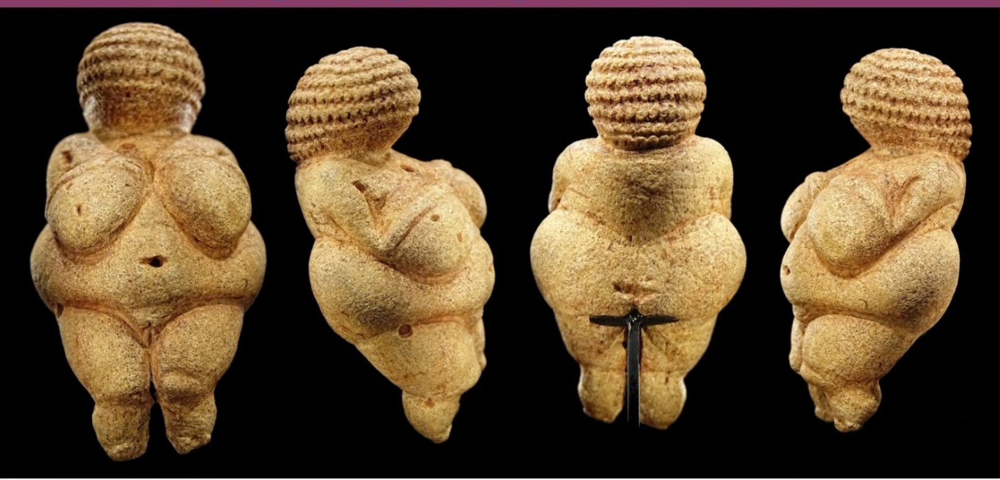
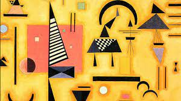
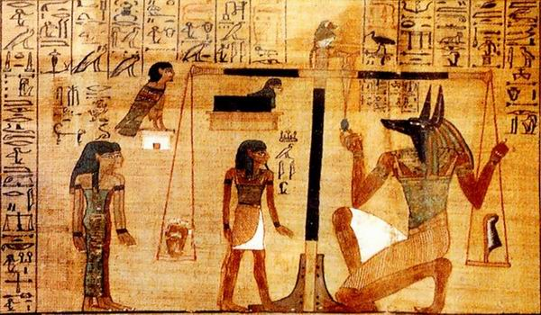
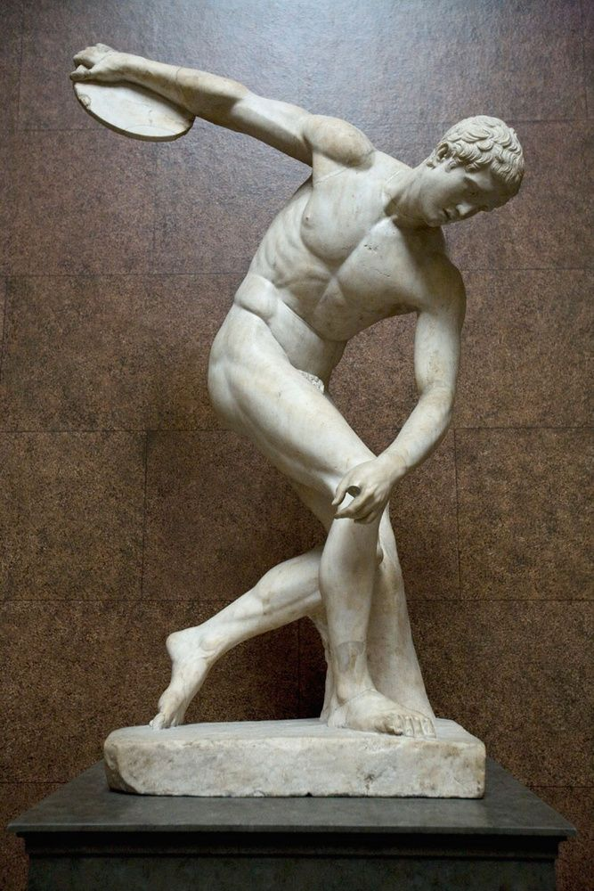
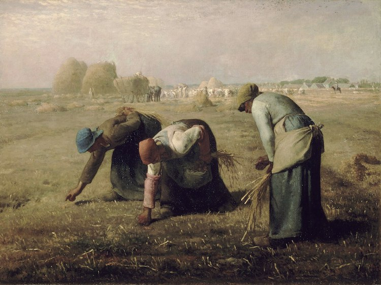
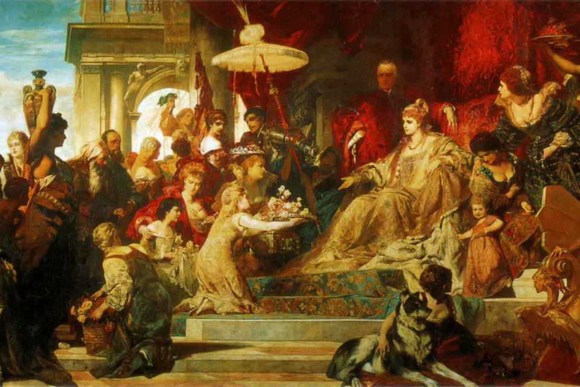
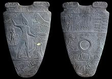
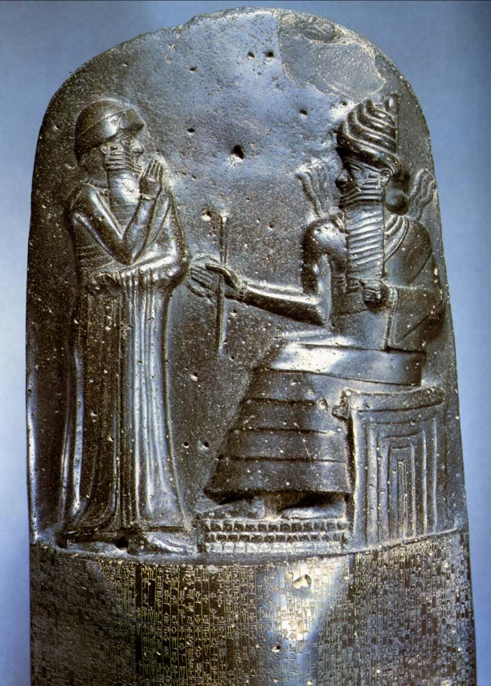
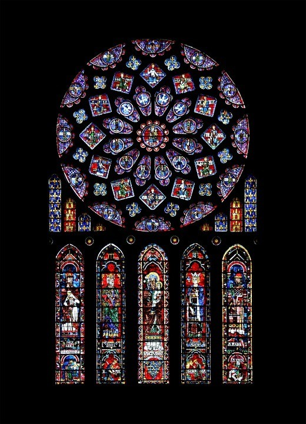

Esta escultura es de las mujeres y su representacion de la fertilidad.

Es parte del arte abstracto que propone una nueva realidad

Jeroglifico que representa un acto de la vida diaria

Estatua que representa al dios-río Iliso y que fue creada en el siglo V a.C.

Una representacion al realismo en donde se refleja la vida cotidiana como algo interesante

Una representacion al romanticismo en donde predomina lo medieval

Una muestra de los jeroglificos que se tallaban en las piramides

Esto es parte de la orfebreria que se manejaba en el arte mesopotamico.

El arte gotico, una representacion de la creencia en un vitral